COURSE 07 · DEVICE DATA INTEGRATION
DataGateway
與 Agent
從設備連線、Tag 與保存政策，到把即時值交給 VisoLink、把設定值寫回設備：建立一條可核准、可保存、可回寫、可排查的設備資料流。
資料整合與 OT 管理員建議 180 分鐘建議先完成 Course 00；VisoLink 端操作見 Course 05對應 DataGateway／Agent 0.4.0-beta
LEARNING OUTCOMES
完成這門課，你能獨立把一台設備接到 VisoLink 畫面
01接上設備
在 Agent 建立 Modbus TCP 或 OPC UA 連線，從讀取結果或節點樹建立 Tag。
02建立信任
把 Agent 連到 DataGateway，由 DataGateway 管理員核准，確認 Online。
03決定保存
用保存額度、保存規則、保存分類替 Tag 指定保存政策，查詢即時值與歷史。
04交給 VisoLink 與回寫
以配對碼讓 VisoLink 接即時值；開啟回寫並設定寫入安全規則，追蹤每一筆結果。
本課對應 DataGateway 與 Agent 操作手冊；按鈕與欄位名稱照畫面原文，用「」標示。
WHO DOES WHAT
Agent 只負責搬資料；Tag、保存與查詢都在 DataGateway
現場設備PLC、控制器、儀表；Modbus TCP、OPC UA
取得Agent取得、推送、接收、回寫，四件事
中樞DataGatewayTag、保存政策、即時與歷史查詢、回寫轉送
使用VisoLink即時與歷史畫面、Runtime 回寫表單
Agent 不保存歷史
Agent 讀到的值直接推送給 DataGateway；只有送不出去時才暫存在本機，恢復後補傳。
Tag 屬於 DataGateway
Agent 新增的點自動在 DataGateway 建立 Tag，名稱為「Agent.連線.點」；改名、換來源，歷史都留在同一個 Tag。
回寫走既有連線
VisoLink 或 DataGateway 送出的回寫，以 Tag 為目標，由 DataGateway 轉給對應的 Agent 寫入設備。
TWO CONSOLES
DataGateway 與 Agent 分開安裝，各有自己的管理網頁
 DataGateway「Server 總覽」：AGENTS、ONLINE、PENDING TRUST、CONTRACT 四張卡，下方是六個容器服務的狀態。
DataGateway「Server 總覽」：AGENTS、ONLINE、PENDING TRUST、CONTRACT 四張卡，下方是六個容器服務的狀態。 Agent「總覽」：整體狀態卡與「運作服務拓樸」（DataGateway → Agent → OT Connections）。
Agent「總覽」：整體狀態卡與「運作服務拓樸」（DataGateway → Agent → OT Connections）。DataGateway 登入
依「DG 管理員登入方式」用 VisoLink 管理員帳號，或 DG 本機帳號；右上角顯示登入來源。
Agent 登入
每台 Agent 有自己的本機帳號，不需要 VisoLink 帳號。
救援登入
兩者都有安裝時的救援帳號，只能建立或重設本機帳密；救援帳密由安裝人員保管。
FIRST-TIME ORDER
第一次接設備，照這六步走
1取得連線資訊DataGateway 總覽「Agent 連線」卡
2Agent 連上 DG「DG 連線設定」填位址、Token、憑證並啟用
3核准DataGateway「Agent Registry」按「核准」
4建立設備連線與 TagAgent「Connections」
5設定保存DataGateway「歷史保存設定」
6交給 VisoLinkWebAPI 讀歷史、配對碼接即時與回寫
沒有保存政策的 Tag 不保存：Tag 建好之後只有即時值；要留下歷史，一定要在 DataGateway 替它指定保存政策（第 5 步）。
CONNECT & BUILD
DataGateway 總覽提供三組連線資訊，分給三個對象
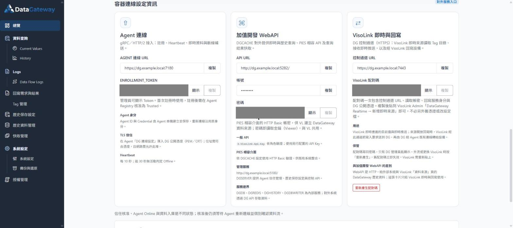
「容器連線設定資訊」：Agent 連線、加值開發 WebAPI、VisoLink 即時與回寫三張卡；Token、密碼與配對碼預設隱藏。- Agent 連線AGENT 連線 URL（埠 7180）、ENROLLMENT_TOKEN、DG 公開憑證；給 Agent 註冊用。
- 加值開發 WebAPIAPI URL 與 Basic 帳密；給 VisoLink「VisoLink DataGateway」資料來源讀歷史。
- VisoLink 即時與回寫VisoLink 配對碼（埠 7443）；一次包含控制通道、讀取帳密、回寫服務身分與憑證。
Token、密碼、配對碼都等同密碼：按「顯示」→「複製」後立刻「隱藏」；不要貼進聊天群組、文件或截圖。只有 DG 管理員看得到。
AGENT UPLINK
在 Agent 填入 DataGateway 位址、Token 與憑證，送出註冊
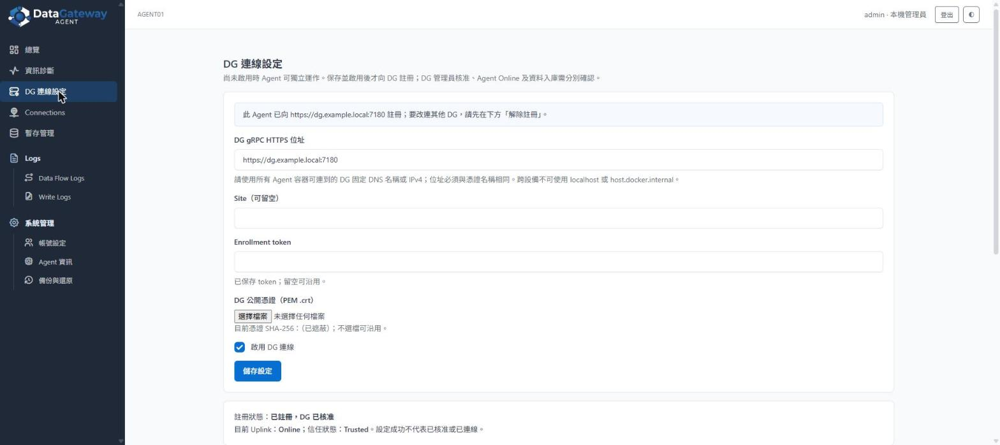
Agent「DG 連線設定」：Token 留空可沿用已保存的值；憑證不選檔可沿用目前的憑證。- 填入連線資訊「DG gRPC HTTPS 位址」貼上 AGENT 連線 URL，貼上 Enrollment token，選 DG 公開憑證（PEM .crt）。
- 啟用並註冊勾選「啟用 DG 連線」→「儲存設定」→「啟用並註冊」。
- 看註冊狀態先是等待 DG 核准；核准後顯示「已註冊，DG 已核准」、Uplink Online、Trusted。
位址規則
必須是所有 Agent 都連得到的固定名稱或 IPv4，且與憑證名稱相同；跨設備不可用 localhost。
一直 Connecting 時
確認 Agent 主機能連到 DataGateway 的 7180 埠；Token 被拒絕就重新從 DataGateway 總覽複製。
AGENT REGISTRY
DataGateway 管理員核准後，Agent 才能新增設備連線
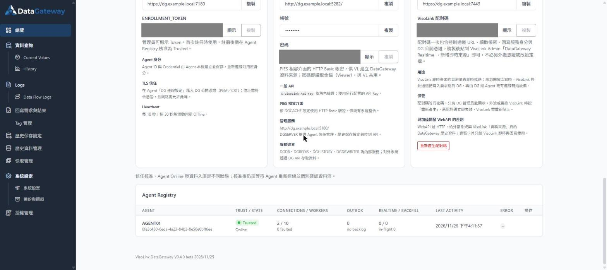
總覽最下方「Agent Registry」：TRUST／STATE、CONNECTIONS／WORKERS、OUTBOX、REALTIME／BACKFILL、最後活動與錯誤。核准
Pending 那一列按「核准」，核對 Agent 名稱與 ID 後「確認核准」，變成 Trusted。
拒絕並刪除
不認得的 Agent 用「拒絕並刪除」；反覆出現時檢查 Enrollment token 是否外流。
解除註冊
只對 Trusted 且 Offline 的 Agent；歷史保留、DG 收回授權點數，Agent 保留身分與暫存資料。
重新申請
被解除的 Agent 可「重新申請註冊」，DG 再次核准後補傳暫存資料。
核准只改變信任狀態，不代表資料已進來；接著到「Tag 管理」與「Current Values」確認。Heartbeat 每 10 秒一次，超過 30 秒沒有活動判定為 Offline。
CONNECTIONS & POINTS
每條設備連線都占授權點數；回寫另外多 1 點
 Agent「Connections」：每條連線的協定、Endpoint、Tags 數、狀態、點數（含回寫）與 DG 權杖。
Agent「Connections」：每條連線的協定、Endpoint、Tags 數、狀態、點數（含回寫）與 DG 權杖。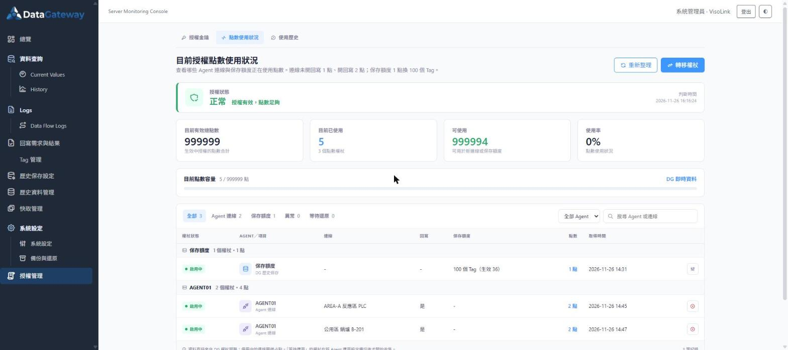
DataGateway「授權管理 › 點數使用狀況」：每列是一個點數權杖（Agent 連線或保存額度）。新增連線
「新增 Connection」選 Modbus TCP 或 OPC UA；新連線預設不開回寫，占 1 點。
開啟回寫
連線設定頁右上「回寫」開關；開啟後變成 2 點。
停用仍占點
「停用」只停止讀取；要釋放點數請「刪除」連線。
刪除不影響歷史
DataGateway 上的 Tag 與歷史不會消失，Tag 變成「無來源」。
MODBUS TCP
Modbus TCP：先決定多久讀一次，再決定讀哪個位置
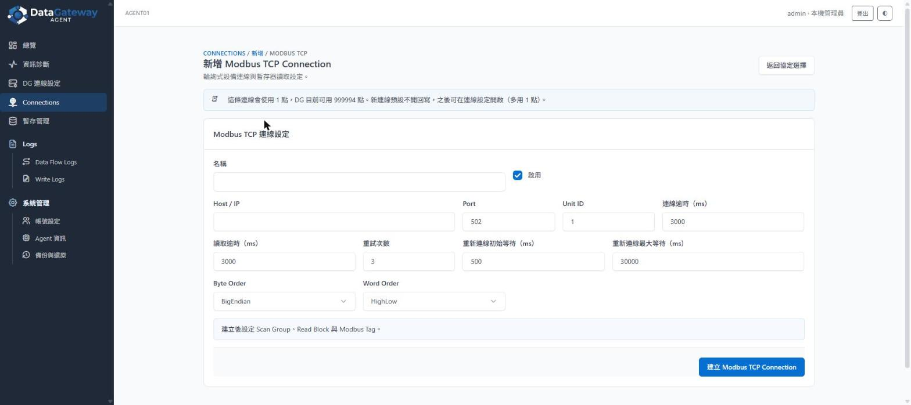
建立連線：Host / IP、Port（預設 502）、Unit ID（預設 1）、逾時與重試、Byte／Word Order。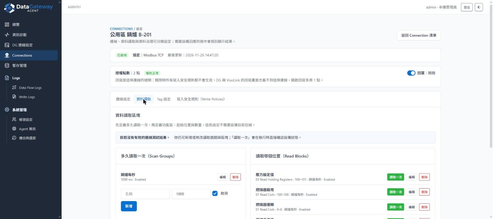
「資料讀取」分頁：Scan Groups（讀取週期）與 Read Blocks（讀取位置）；可離線設定。01建立連線
填名稱、Host / IP、Port、Unit ID；Byte Order、Word Order 依設備手冊，按「建立 Modbus TCP Connection」。
Scan Group
輸入名稱與毫秒數（例如「鍋爐每秒」、1000），勾「啟用」後「新增」；週期太短會加重設備負荷。
Read Block
選 Function（01／02／03／04）與 Scan Group，填 Start Address（Base 0）與 Quantity；設備在線時按「讀取一次」確認。
MODBUS TAGS
從讀取結果建立 Tag：看著解碼值選對型別與位元組順序
 「Tag 設定」：「從讀取結果建立」適合一般設定；「手動／進階設定」可離線指定 Offset、型別與位元組順序。
「Tag 設定」：「從讀取結果建立」適合一般設定；「手動／進階設定」可離線指定 Offset、型別與位元組順序。- 讀取並預覽選 Read Block 與資料型別（例如 Float32 2 registers），按「讀取並預覽」。
- 選取正確的列表格列出原始 Registers、HEX 與解碼值；右側比較不同 Byte／Word Order 的結果。
- 命名與建立填名稱、顯示名稱，按「確認此值並建立 Tag」；Coil 自動存成 Bool。
- 回 DataGateway 確認「Tag 管理」出現對應的 Tag。
保存間隔跟著 Agent 的點，要不要保存由 DataGateway 決定：History interval 與是否保存重複值在 Agent 設定；是否保存、用哪種保存政策，在 DataGateway「歷史保存設定」。
OPC UA
OPC UA：建立連線、測試，再用資料群組做邏輯分組
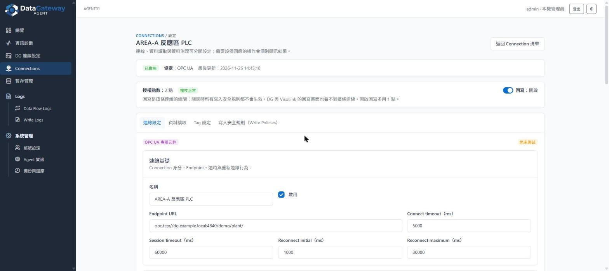
「連線設定」分頁：上方授權點數與回寫開關；下方連線基礎、授權／安全性、取樣頻率。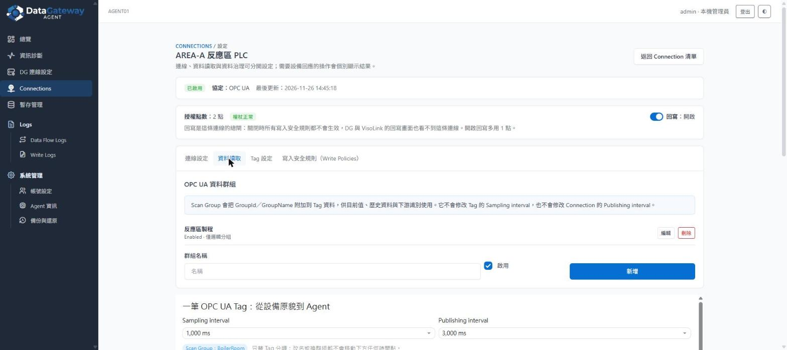
「資料讀取」分頁的資料群組：只做邏輯分組，不改變 Sampling interval 或 Publishing interval。建立連線
填名稱與 Endpoint URL（opc.tcp://<設備位址>:4840）；Security Mode／Policy、Authentication 依設備要求，其他可用預設值。
測試
按「儲存並測試連線」；連不上時用「Discover endpoints / certificates」查看設備提供的端點與憑證。
取樣頻率
Sampling interval 是每個 Tag 的設定，到「Tag 設定」逐筆或批次調整；連線的 Publishing interval 不改變它。
OPC UA TAGS
從節點樹勾選，一次建立並批次命名多個 Tag
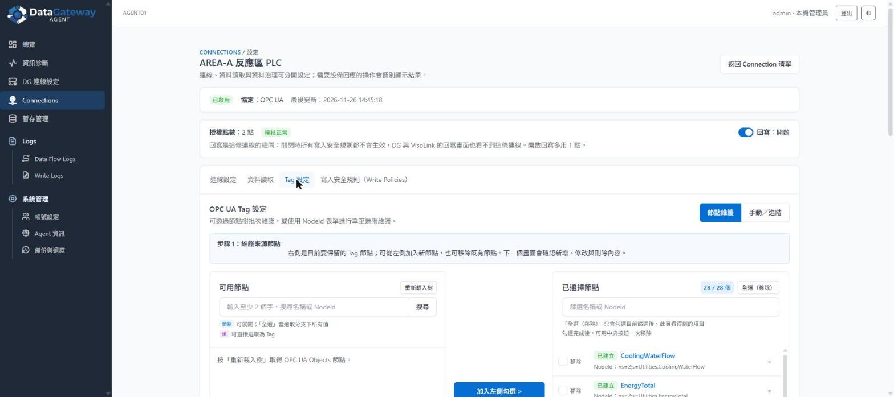
「節點維護」：左側是設備節點樹，右側「已選擇節點」是要保留的 Tag。- 載入節點樹「重新載入樹」，或輸入至少 2 個字搜尋名稱或 NodeId。
- 勾選並加入勾「全選」選取分支下所有值，按「加入左側勾選 >」。
- 確認與批次命名「下一步：確認並設定 N 個 Tag」；篩選後「全選篩選結果」，輸入 TagName 前綴「套用至選取」。
- 儲存「儲存 Tag 異動」，顯示新增 N 個；DataGateway「Tag 管理」出現對應 Tag。
樹是空的：設備未連線，先在「連線設定」測試連線。同名節點會自動加亂碼避免衝突，請用批次命名整理。
TAG MANAGEMENT
Tag 屬於 DataGateway：換設備、換來源，歷史都不斷線
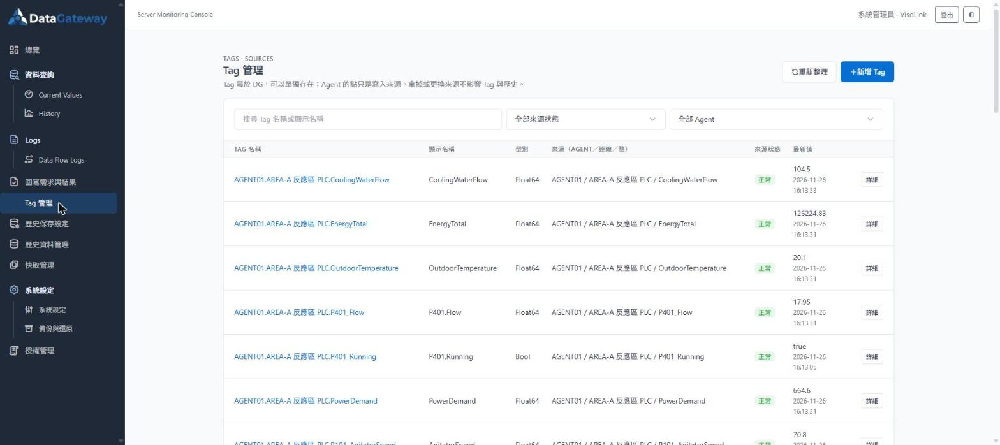
「Tag 管理」：來源（AGENT／連線／點）、來源狀態與最新值；可依來源狀態與 Agent 篩選。 Tag 詳細：改名、「改連結」更換來源、「移除來源」、「刪除 Tag」。
Tag 詳細：改名、「改連結」更換來源、「移除來源」、「刪除 Tag」。來源狀態
正常、來源離線、來源停用、無來源、型別不符。
先建 Tag 再接來源
「＋新增 Tag」建立無來源的 Tag，再用「改連結」接上 Agent 的點；適合換設備沿用歷史。
只想停止收資料
用「移除來源」：Tag 變成無來源，歷史保留。
刪除 Tag
連同所有歷史數值一起刪除，無法復原；刪除前先備份。
RETENTION POLICY
保存要明確指定：額度 → 規則 → 分類 → 指派 → 開關
 「歷史保存設定 › 運作總覽」：保存額度與使用率、總開關、各資料庫開關與實際寫入結果。
「歷史保存設定 › 運作總覽」：保存額度與使用率、總開關、各資料庫開關與實際寫入結果。- 調整保存額度1 點授權保存 100 個 Tag。
- 建立保存規則政策只有四種：完整保存、變更時保存、趨勢壓縮、定期取樣。
- 建立保存分類帶一個預設保存規則。
- 在資料點管理指派指派分類，或個別指定規則覆寫。
- 確認開關保存目的端寫入開關、歷史保存總開關都為 ON。
產品決定：沒有指定保存政策的 Tag 不保存。額度不足時，新進來的 Tag 也只更新即時值；「額度不足未保存」大於 0 就要增加額度。
RULES & CATEGORIES
規則決定怎麼存；分類讓一群資料點共用同一條規則
 建立保存規則：儲存前可按「試算目前草稿」預覽哪些資料會保存或略過。
建立保存規則：儲存前可按「試算目前草稿」預覽哪些資料會保存或略過。 保存分類：未個別指定規則的資料點會繼承分類的預設規則。
保存分類：未個別指定規則的資料點會繼承分類的預設規則。保存規則
例如「製程每分鐘取樣」：保存模式定期取樣、保底依時間、時間窗長度與逾時容許期；「儲存規則」後從正式服務回讀確認。
保存分類
填名稱、代碼（不可重複）與預設保存規則，按「建立分類」。
刪除限制
規則被分類或資料點使用中不能刪除；沒有資料點的分類才能「刪除未使用分類」。
ASSIGN & DESTINATIONS
把資料點指派到分類，再確認資料真的寫進資料庫
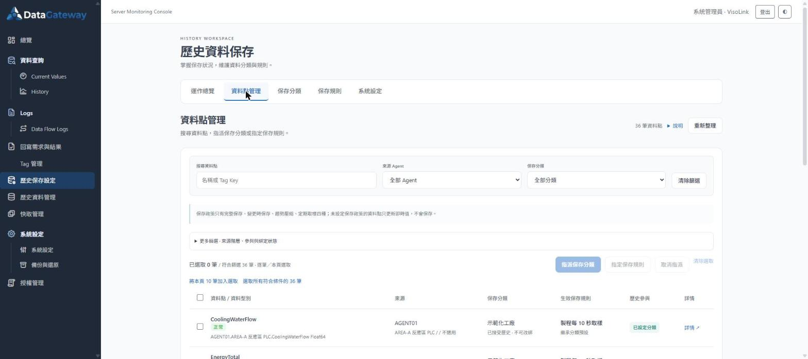
「資料點管理」：逐筆、本頁或「選取所有符合條件的 N 筆」批次指派；抽屜顯示額度影響與逐筆預覽。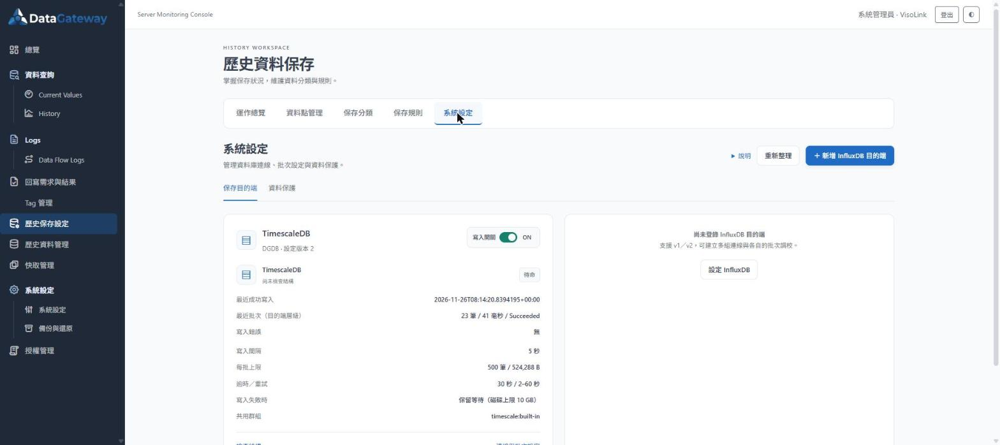
保存目的端：TimescaleDB 固定一組；InfluxDB v1／v2 可建立多組。指派
勾選資料點 →「指派保存分類」（或「指定保存規則」）→ 看預覽與略過原因 →「確認指派」。
取消指派
資料點不再保存，但已保存的歷史仍查得到。
寫入失敗時
目的端選「保留等待」會暫存到寫入服務的磁碟，恢復後依序補寫，不影響其他資料庫。
CURRENT VALUES
先在 DataGateway 看到即時值，再交給 VisoLink
 「資料查詢 › Current Values」：目前值、品質、設備取樣與 DataGateway 接收時間，以及是否逾時。
「資料查詢 › Current Values」：目前值、品質、設備取樣與 DataGateway 接收時間，以及是否逾時。- 找 Tag「找 Tag／加入清單」→ 輸入名稱 →「搜尋 Tag 目錄」→「加入待查詢」。
- 查詢「查詢待查詢列表」，持續即時更新。
- 判讀QUALITY 例如 Good；STALE 顯示 Fresh 表示在逾時判定內。
待查詢列表存在這台瀏覽器；測值本身不存在瀏覽器。顯示「DG 維護中，暫停查詢」時，等 DataGateway 切回運作中。
HISTORY
歷史查詢三步：找 Tag、設定時間與取得方式、看趨勢與表格
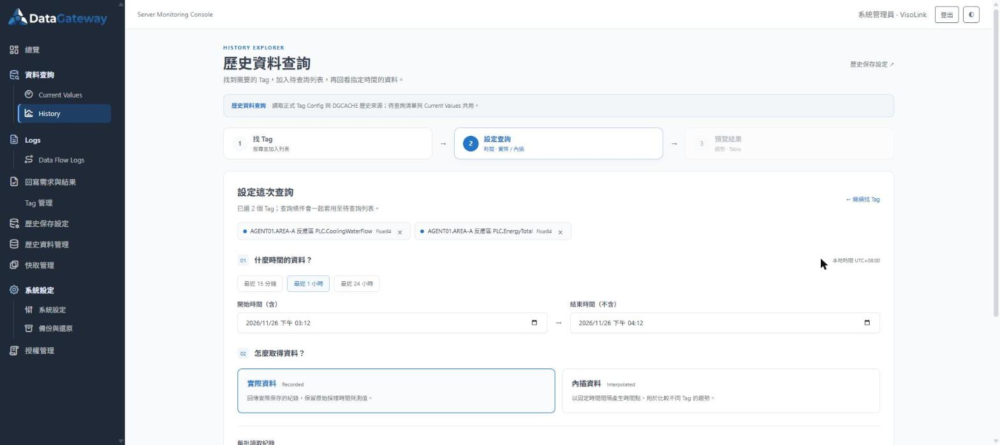
步驟 2：時間區間與「實際資料 Recorded」或「內插資料 Interpolated」。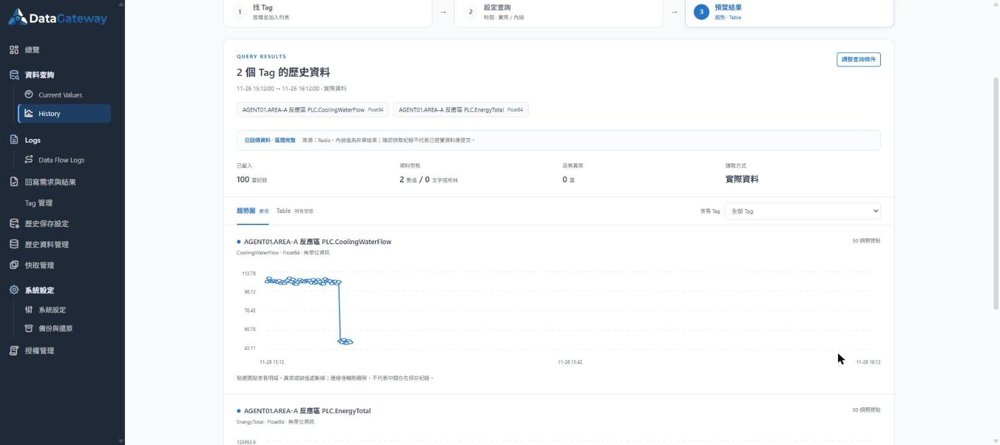
步驟 3：摘要顯示已載入筆數與品質異常，可切換趨勢圖與 Table。查詢限制
一次最多 31 天；畫面最多載入 10,000 筆；內插最多 10,000 個時間點。
以 Tag 為準
Agent 離線、解除註冊、Tag 改名或更換來源後，歷史仍查得到且不會斷成兩段。
查無資料
先確認這個 Tag 有保存政策；沒有保存政策的 Tag 只有即時值。
TO VISOLINK
VisoLink 用兩條路取得 DataGateway 的資料
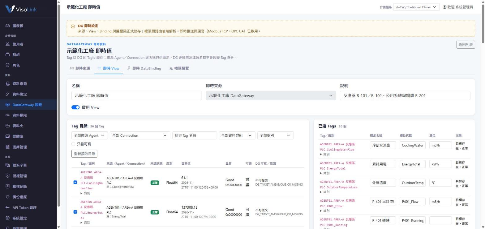
VisoLink 端（後台手冊）：即時 View 從 DataGateway 的 Tag 目錄挑選 Tag，「DG 可寫」欄顯示能否回寫。VisoLink 端完整操作見 Course 05。歷史：加值開發 WebAPI
複製「加值開發 WebAPI」卡的 API URL、帳號與密碼；VisoLink 後台「資料來源」新增「VisoLink DataGateway」類型並「測試連線」。需連得到 5282 埠。
即時與回寫：配對碼
「VisoLink 即時與回寫」卡「複製 VisoLink 配對碼」；VisoLink 後台「DataGateway 即時」新增即時來源，貼上後「測試連線」。需連得到 7443 埠。
重新產生配對碼：配對碼外流或更換 VisoLink 時使用；舊配對碼立即失效，所有已貼上舊碼的 VisoLink 都要重新貼上。
WRITE POLICIES
能不能回寫，由 Agent 決定：總閘、安全規則、可寫 Tag
 「寫入安全規則（Write Policies）」：每條規則顯示允許範圍、是否寫入後讀回、操作逾時與冷卻時間。
「寫入安全規則（Write Policies）」：每條規則顯示允許範圍、是否寫入後讀回、操作逾時與冷卻時間。- 開啟連線回寫連線設定頁右上「回寫」開關；這是整條連線的總閘，多用 1 點。
- 建立寫入安全規則最小值、最大值、操作逾時、Cooldown；勾「啟用」與「寫入後讀回確認」。
- 把 Tag 設為可寫Tag「編輯」→ Access Mode 改 ReadWrite → 選 Write Policy。
- 測試寫入選 Tag、輸入值與操作者代號，「產生新 ID」→「確認並送出」，再「依 RequestID 查詢」。
測試寫入會真的寫到設備，先確認現場狀態與數值安全。值被拒絕通常是超出範圍、還在 Cooldown，或 Tag 沒有指定規則。
WRITE SUBMISSIONS
DataGateway 送出回寫並追蹤每一項的寫入與讀回
 「新增回寫」：選目標並加入待送清單；加入清單不會送出設備寫入。
「新增回寫」：選目標並加入待送清單；加入清單不會送出設備寫入。 「需求紀錄」：操作者與來源（例如 VisoLink 送來的需求）、進度與成功／失敗／未知／讀回警告數。
「需求紀錄」：操作者與來源（例如 VisoLink 送來的需求）、進度與成功／失敗／未知／讀回警告數。01選擇目標
依序選 Agent、Connection、Tag；選單會標示不能回寫的原因。輸入值後「加入／更新待送清單」。
核對與送出
「核對送出清單」→ 勾「我已核對每一項目標、值與政策限制」→「確認並送出回寫需求」。
看結果
「需求紀錄」按「明細」；結果不明時按「向Agent查證原需求」，只查詢、不會再寫一次。多項需求逐項處理，不是原子交易；「已完成」不代表全部成功。
WRITE-BACK CHAIN
從 VisoLink 回寫，四道關卡都要允許
1Agent 連線「回寫」開關開啟
2Agent TagReadWrite，且指定啟用中的寫入安全規則
3VisoLink 即時來源開啟「允許經由 VisoLink 回寫這個 DG」
4VisoLink 即時 DataBinding使用者有寫入權限
確認可回寫
DataGateway「新增回寫」的 Tag 選單出現這個 Tag；VisoLink 即時 View 的「DG 可寫」顯示「可提交」。
結果記在哪裡
Agent「Write Logs」與 DataGateway「需求紀錄」；從 VisoLink 送出的回寫，在 DataGateway 需求紀錄看完整結果。
以設備讀回為準
State 為 OutcomeUnknown 代表寫入期間連線中斷，請以設備實際值為準並重新確認。
BUFFER & MAINTENANCE
DataGateway 維護中，Agent 先暫存，恢復後自動補傳
 Agent「暫存管理」：右上顯示「DG 已連線 · 沒有暫存」；容量與保存時間各有上限。
Agent「暫存管理」：右上顯示「DG 已連線 · 沒有暫存」；容量與保存時間各有上限。DataGateway 維護中
暫停接收、寫入、回寫與查詢；Agent 把資料留在本機暫存，切回運作中後自動補傳。Agent 不必跟著切換。
Agent 自己維護中
暫停設備讀取、回寫、上傳與設定修改；維護期間不收集資料。
暫存上限
「DG 連線設定 › 本機暫存保存上限」：保存時間預設 7 天、容量預設 2 GB；任一個先到就刪除最舊的資料，採集不停止。
不要隨意解除註冊
Agent 端「解除這個 DG」會刪除本機尚未送出的全部暫存；DataGateway 只是暫時離線時不要解除。
維護前通知使用 VisoLink 即時畫面與回寫的人員；時間較長時確認 Agent 暫存上限足夠。DataGateway 不會代為切換 Agent 與 VisoLink 的模式。
MONITORING
資料沒進來時，沿著事件紀錄一段一段找
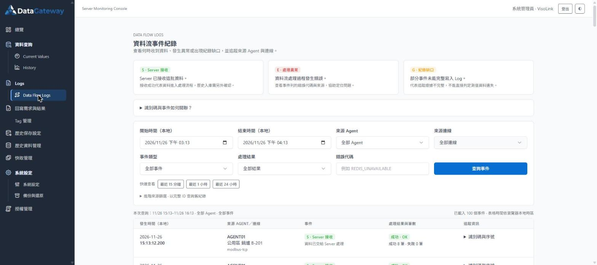
DataGateway「Logs › Data Flow Logs」：依時間、來源 Agent、連線、事件類型與處理結果篩選。 Agent「資訊診斷」：整體狀態、設備連線、資料安全、需要人工處理；可展開工程師進階診斷。
Agent「資訊診斷」：整體狀態、設備連線、資料安全、需要人工處理；可展開工程師進階診斷。S · Server 接收
DataGateway 已收到這批資料；是否入庫另外確認。沒有 S 事件就先看 Agent 是否 Online。
D · 目的端寫入完成
資料已寫入保存目的端。
E · 處理異常
記下錯誤代碼；Agent 端例如 MODBUS_TIMEOUT 代表設備沒有回應。
G · 紀錄缺口
部分事件未完整寫入 Log；不能直接判定測值遺失。
OPERATIONS
DataGateway 的系統設定、授權與備份
 「系統設定 › 系統概覽」：目前發行版、服務健康狀態（6 / 6）、運作狀態卡（切到維護中）。
「系統設定 › 系統概覽」：目前發行版、服務健康狀態（6 / 6）、運作狀態卡（切到維護中）。修改與套用
各分類「儲存此分類」後到「套用與重啟」；項目標示線上套用或需重新啟動容器。
登入方式
切換前先確認新方式的帳號能登入，否則只能用救援帳號恢復。
授權
每條 Agent 連線 1 點、開回寫 2 點；保存額度 1 點換 100 個 Tag；可「離線啟用」。
備份
DataGateway 與 Agent 都能自己下載設定備份；統一排程交給備份中心（Course 08）。
版本相容：Agent「Agent 資訊」的 Contract 要與 DataGateway 總覽的 CONTRACT 相同。快取管理（Redis 讀取快取與保存緩衝）見 DataGateway 手冊第 10 章。
TROUBLESHOOTING
六個常見狀況，先查這裡
Agent Registry 是空的Agent 端還沒啟用 DG 連線，或連不到 DataGateway 的 7180 埠。
核准後一直 Offline看 Agent「DG 連線設定」的 Uplink 狀態與最近錯誤。
Agent 的點沒出現在 Tag 管理確認 Agent 已核准且 Online，再按「重新整理」。
歷史查無資料Tag 沒有保存政策、額度不足，或目的端寫入開關、總開關沒開。
VisoLink 顯示不可提交連線回寫沒開，或 Tag 不是 ReadWrite、沒有啟用中的寫入安全規則。
維護後資料沒補齊看 Agent Registry 的 BACKFILL，以及「系統設定 › 診斷與補送」是否暫停補送。
HANDS-ON
在自己的測試環境，把一台設備接到 VisoLink 並回寫
A. Agent 接設備
- Agent 依 DataGateway「Agent 連線」卡設定並啟用 DG 連線
- 建立一條 Modbus TCP 連線（Scan Group、Read Block、從讀取結果建 Tag），或一條 OPC UA 連線（節點樹選 Tag、批次命名）
- 建立至少 3 個 Tag，其中 1 個準備回寫
B. DataGateway 核准與保存
- 在 Agent Registry 核准這台 Agent，確認 Online
- 在 Tag 管理確認 Tag 出現、來源狀態正常
- 調整保存額度、建立保存規則與分類，只指派 2 個 Tag
- 用 Current Values 與 History 確認：有保存政策的 Tag 有歷史，另一個只有即時值
C. VisoLink 接即時值與回寫
- Agent 開啟連線回寫、建立寫入安全規則、把 1 個 Tag 設為 ReadWrite
- VisoLink 以配對碼建立即時來源、即時 View 與即時 DataBinding（Course 05）
- 在 Runtime 看即時值並送出一次範圍內的回寫
- 在 DataGateway 需求紀錄與 Agent Write Logs 核對結果與讀回值
測試環境請使用模擬設備或講師指定的測試點；回寫值一律在寫入安全規則範圍內。Enrollment token、WebAPI 密碼與配對碼不得寫入作業紀錄或截圖。
ASSESSMENT
Course 07 驗收：資料流每一段都有可觀察的結果
現場驗收
- Agent Registry 顯示 Trusted、Online；Agent 總覽整體狀態正常
- Tag 管理的 Tag 來源狀態正常，名稱經整理可辨識
- 指派保存政策的 Tag 查得到歷史；未指派的只有即時值，學員能說明原因
- VisoLink Runtime 顯示即時值；回寫成功且讀回值相符
- 學員說出四道回寫關卡，以及 DataGateway 維護中時 Agent 如何暫存與補傳
口頭問答
- 為什麼 Agent 不保存歷史？保存政策在哪裡設定？
- 停用連線和刪除連線，對授權點數與 DataGateway 的 Tag 有什麼不同？
- 歷史和即時分別用哪組連線資訊交給 VisoLink？
- 資料沒進來時，Data Flow Logs 的 S、D、E、G 各代表什麼？
通過標準能從設備一路接到 VisoLink 畫面與回寫，只保存指定的 Tag，所有機密資訊未外流，並能用事件紀錄定位問題發生在哪一段。
下一門：備份中心 →